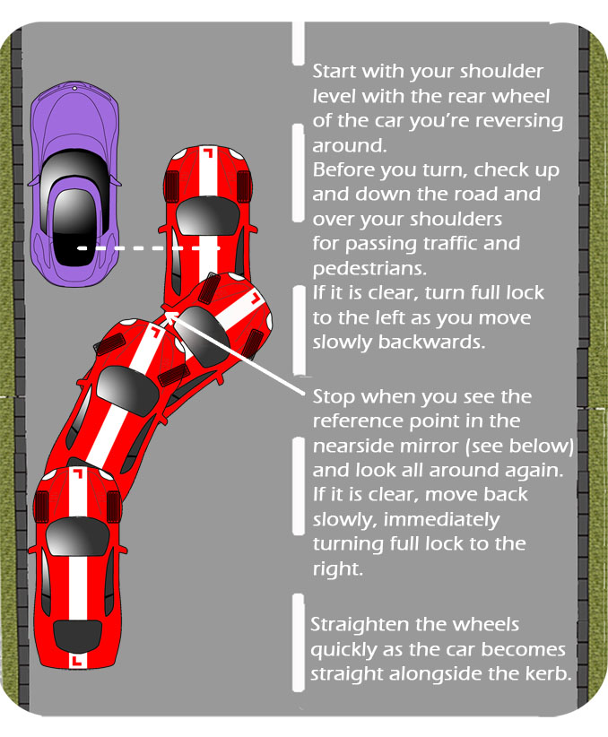
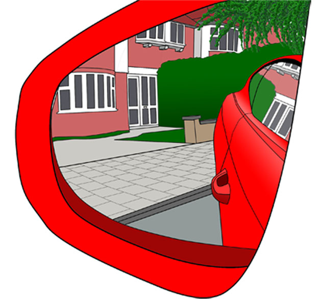

You will need to be able to reverse into a space behind a parked car, finishing reasonably close to the kerb and leaving no more than a car length between.
This should be carried out at a safe, legal and convenient location so areas where there are parking restrictions, busy traffic or poor visibility due to bends or hills should be avoided.
Below is one method of carrying out this manoeuvre. Your instructor may teach a different technique or a variation on this one. On your test, you will not be judged on the exact method but on the safety and control of the manoeuvre.


It is useful to establish a reference point and the nearside mirror can be used to do this. You may need to lower the mirror but be sure to adjust it by just the same amount each time for a consistent reference.
When you have reached the optimum point of turn, (Your instructor can help you the first few times), try remembering where the kerb meets the side of the car.